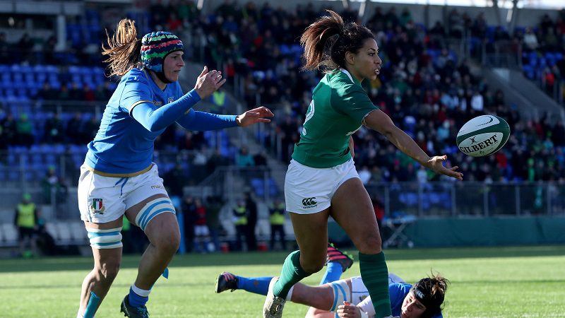

Four changes to Ireland Women ahead of Wales battle
21 Feb 2018
Adam Griggs has made four changes to the Ireland Women's starting team to take on Wales in the third round of the Women's Six Nations in Donnybrook Stadium this Sunday.
Having triumphed at Italy 21-8 last time out before the well-earned rest, the Irish will be looking to continue the momentum into this weekend. Griggs' side currently sit third in the standings on the same amount of points with Wales, six points behind tied leaders England and France, so Sunday's game is must-win.
Ciara O'Connor and Leah Lyons, who both featured off the bench in the opening rounds of the tournament, start alongside Lindsey Peat in the front row. Nichola Fryday is partnered in the second row by Orla Fitzsimons, whilst Paula Fitzpatrick moves to Number 8 to accommodate the change while captain Ciara Griffin moves to the blindside. Claire Molloy completes the back-row trio and will see her 60th appearance for her country, along with Niamh Briggs at fly half. There is one change in the backline with Claire McLaughlin starting for the injured Alison Miller alongside Megan Williams and Kim Flood in the back three. Sene Naoupu and Katie Fitzhenry are again named at centre with Ailsa Hughes at scrum half.
Speaking ahead of the game, Griggs said: "We got a good boost after the win over Italy a fortnight ago. We did what we wanted to, played with tempo and moved the ball. "While the performance was far from perfect, we set a marker down for the rest of the campaign. "We now head into a tough test on Sunday against the Welsh. We are looking to rectify some of the areas of our game that we haven't been happy with over the past few weeks and if we can make those small changes, it should be a great one. "Having the crowd behind us against Italy really spurred us on, so we're hoping to see another big turnout of fans on Sunday in Donnybrook."
Ireland Women team to face Wales:
- 15. Kim Flood (Railway Union/ Leinster)
- 14. Megan Williams (Old Belvedere/ Leinster)
- 13. Katie Fitzhenry (Blackrock College/ Leinster)
- 12. Sene Naoupu (Old Belvedere/ Leinster)
- 11. Claire McLaughlin (Cooke/ Ulster)
- 10. Niamh Briggs (UL Bohemian / Munster)
- 9. Ailsa Hughes (Railway Union/ Leinster)
- 1. Lindsay Peat (Railway Union/ Leinster)
- 2. Ciara O'Connor (Galwegians/ Connacht)
- 3. Leah Lyons (Highfield/ Munster)
- 4. Orla Fitzsimons (St Mary's/ Leinster)
- 5. Nichola Fryday (Tullamore/ Connacht)
- 6. Ciara Griffin (UL Bohemian/ Munster) Captain
- 7. Claire Molloy (Bristol / Connacht)
- 8. Paula Fitzpatrick (St Mary's/ Leinster)
Replacements:
- 16. Cliodhna Moloney (Railway Union/ Leinster)
- 17. Laura Feely (Galweigians/ Connacht)
- 18. Fiona Reidy (UL Bohemian/ Munster)
- 19. Aoife McDermott (Railway Union/ Leinster)
- 20. Edel McMahon (Galwegians/ Connacht)
- 21. Nicole Cronin (UL Bohemians/ Munster)
- 22. Michelle Claffey (Blackrock College/ Leinster)
- 23. Hannah Tyrrell (Old Belvedere/ Leinster)